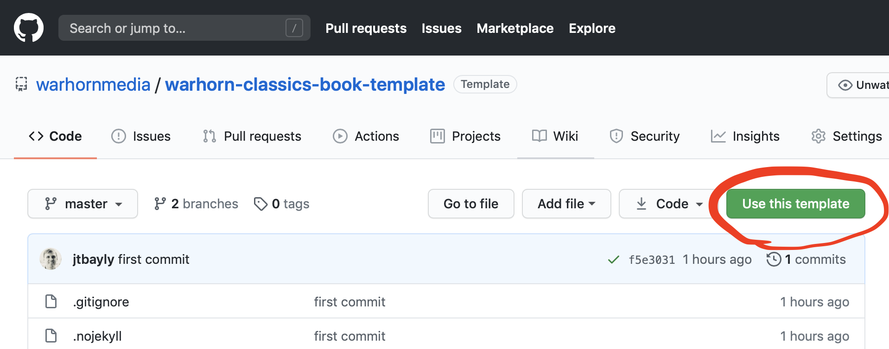
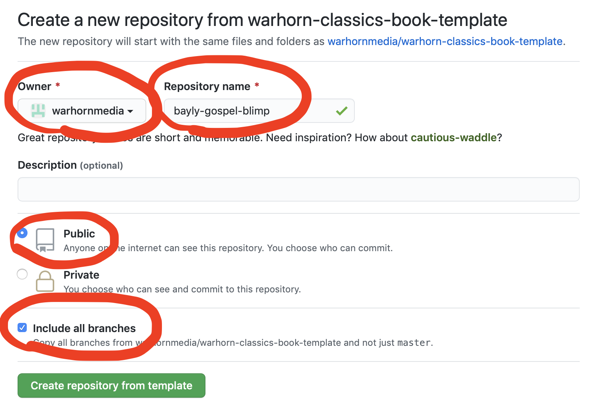

Chapter 1 Creating a new book from scratch
1.1 Creating a new repo for a new book on Github
- Go to our empty book repo on Github and click “Use this template.” (You must be logged into Github already.)

- Change the owner to warhornmedia. Enter a repository name using the format “authorlastname-short-book-title”. Set the repository to public. And include all branches. Then click “Create repository from template”

Create an account on travis-ci.com and link it to your github account. Make sure to give it permission for the warhornmedia organization as well.
Clone the new repo to your computer and navigate into its folder in Terminal. Then run the following command locally, answering ‘yes’ to both questions.1
travis encrypt GITHUB_PAT=yourTokenGoesHere --com --add -x
This will encrypt your token so that only Travis CI can use it. Then it will add it to the end of the .travis.yml file. Because it is encrypted, it doesn’t matter that it is available in our public repo in the .travis.yml file. In fact, it has to be there. Without that, Travis CI wouldn’t be able to save the updated book files back to Github.
1.2 Preparing your local build environment
- Download RStudio for desktop here.
- Make sure that LiberationSerif is installed. (When we finalize fonts, this will need to be updated. It’s possible it’s already out of date.)
Congrats! You now have a new book that will rebuild automatically any time you push changes to github.
For more in-depth instructions on setting up your new book, as well as important information on how to code the book, check out the style guide.
Once you’ve followed the instructions and created a new book from the book template, you will need to understand what the files do and how to proceed in customizing the book. The first section below outlines each of the files and what needs to be changed in them when creating a new book.
1.3 What are all these files?
Below is a list of the files in the book template, along with a description of that file and the contents. If the name of a field inside a file is bold below, that means you need to customize that field for a new book.
- .gitignore
- Specifies which files are not to be tracked in git. In particular, we only want to track book source, not output files (_book), files related to RStudio, or external files used in the build process (classics-template-files). This file already has the right settings.
- .travis.yml
- Imports the actual travis build instructions from the classics-template-files project, and contains the encrypted personal access token that allows TravisCI to push the built books back to GitHub. If you followed the instructions for the template book, you shouldn’t need to do anything else to this file.
- 01-Basic-instructions.Rmd
- Contains the content of the first chapter of the template book. Should be deleted or renamed and its content replaced with the first chapter of the new book. See
- _bookdown.yml
- contains some settings for bookdown.
- Contents:
- book_filename: Change this to give book downloads, such as PDFs, appropriate filenames. Don’t use spaces. Standard: author’s last name followed by short title, like so:
book_filename: "Ryle-Duties_of_Parents"
- book_filename: Change this to give book downloads, such as PDFs, appropriate filenames. Don’t use spaces. Standard: author’s last name followed by short title, like so:
- Don’t change anything else in this file, unless you need “chapters” to be called something else. If so, make sure you check all the output formats thoroughly and report back. This is currently untested in our books.
- _output.yml
- Contains a number of settings for the various output formats. You shouldn’t need to make changes to this file.
- cover.jpg
- Should be replaced with an image of the book cover. Alex is working on a simple design that will be able to be used for all of the books. Both JPG and PNG files are supported.
- DESCRIPTION
- A necessary file for bookdown to work properly on Travis CI. Ignore.
- index.Rmd
- Contains many settings for the book and the code to automatically include the Classics front matter in each book. Anything not mentioned below should be left unchanged.
- Contents:
- title, author, and date must all be changed and should be self-explanatory
- description: Short description of the book. Don’t use copyrighted content here. Write your own description. This field is useful for SEO. Also, it is displayed together with the cover image when the book is shared on certain social media.
- params:
- scans: Enter a link to scanned images of the original public domain work on Google books, Archive.org, or elsewhere.
- build: This can be any number. Change the build number if you ever want to force the book to rebuild but haven’t changed anything else. It’s used for no other purpose.
- cover-image: the name of the image file being used as the cover for the book. Make sure to include the extension, such as cover.jpg, or cover.png.
- url: the page where the book is hosted. Currently must end with a “/“.
- output:
- bookdown::gitbook:
- config:
- toc:
- before: This content is shown above the TOC on the web version of the book. Having the book title (and author last name if it will fit), is helpful for people to know what they are looking at. Change this on the second line.
- edit: where the edit link on each page points to. Should be the GitHub project URL, followed by “/edit/master/%s”
- config:
- bookdown::gitbook:
- output:
- README.md
- The description of the repo that will be displayed on the Github project page. Update this with some simple info and a link to the readable book.
- book_project.Rproj
- This file can be ignored. If you use the Rstudio IDE, this is your project file, and you’ll probably want to rename it to the book title just so you don’t get confused which book project you are working on.
- images (folder)
- This folder should be deleted unless the book you are working on has images. In which case, delete the images that came in the template, and add the new images from the book.
1.4 Adding book content
To add content to the book, simply add Rmd files.
All the Rmd files will be combined into a book, ordered by filename. So use numbers at the beginning of the files to indicate the order they should go in. Note that index.rmd will always come first, though, and will automatically include the Warhorn Classics front matter. Here is an example list of files in the order they will end up in the book.
index.Rmd
00-preface.Rmd
01-The-Sacraments-In-General.Rmd
02-The-Sacrament-of-Baptism.Rmd
03-The-Sacrament-of-the-Lords-Supper.RmdNote that the numbers at the beginning of each filename are only used to get the files into the proper order in the book. It is handy if they can correspond to the chapter number just to prevent confusion, but it is not necessary.
The online version of the book will be split up into separate pages, not just one long web page. The split will happen at each new .rmd file.2 Thus, in most cases a new .rmd file should be created for each chapter. Each .rmd file must begin with the title of the chapter it contains. (The proper syntax is described in the next section.)3
1.5 Chapters, sections, and more
The primary structure in Warhorn Classics books is determined by various levels of headers, and it can easily be seen in the automatically generated table of contents.
By default, the top level of structure is called a “chapter.” However, this word can be changed in _bookdown.yml if necessary for sermons or other types of works where “chapter” is not appropriate.4
The start of a chapter is specified in the text with a # followed by the title of the chapter. Here is an example of the proper syntax:
# A Long-expected chapter titleThe chapter title will be given an <h1> tag in HTML, with similar results in other formats.
Chapters can be broken down further into sections, sub-sections, etc. up to 6 levels total, using additional levels of headers and titles:
## This is a section. (It will receive an <h2> tag in HTML.)
### Here is a sub-section.
#### And now a sub-sub-section
###### This is the deepest level supported, because <h6> is the deepest header level supported in HTML.1.5.1 Numbering (or not)
Chapters, sections and subsections will all be automatically numbered, unless you exclude them from numbering by adding “{-}” to the end of the line. For example, generally an introduction should not be numbered:
# Introduction {-}
Text of the introduction goes here...Or perhaps the subsections in the book are not numbered:
# How to write a book
## Getting started
### Arranging your pencils {-}It is possible to assign an ID and specify that a section is not to be numbered like so:
## Section forty-five {- #sec-45}1.5.2 IDs
Chapters and sections always have an ID so they can be linked to. If one is not set explicitly, one will automatically be given (implicitly) based on the title. This will be discussed later in the references section.
Here are instructions for creating a Github Personal Access Token if you don’t have one yet. (Check the “repo” box under “scopes” to give the necessary permissions.)
Also, if you don’t have travis installed on your computer yet, you can install it with this command:
brew install travisBefore this will work, you will need to create an account on travis-ci.com and link it to your github account.
If you don’t have brew installed yet… prepare yourself for some waiting. You can install it with this command:
/bin/bash -c "$(curl -fsSL https://raw.githubusercontent.com/Homebrew/install/master/install.sh)"You should be good to go now.↩︎
This can be changed, if necessary, to split by chapter or section, or even turned off completely.↩︎
Supposedly the first file must begin with either a chapter (“# Chapter name”) or a section (“## Section title”). However, it appears that it must be a chapter, as starting with a section causes an error. Latter files may start with a section, instead, if necessary, to split the book into appropriate-length webpages.↩︎
The bookdown documentation says it is also possible to split a book into “parts” made up of multiple chapters, as well as add a special “part” called “appendix.” However, ebooks and Word documents do not get any “part” information, so we do not support this option in our books.↩︎